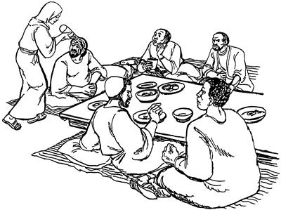
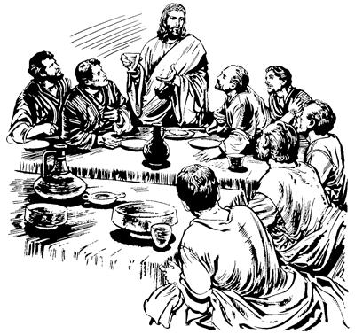
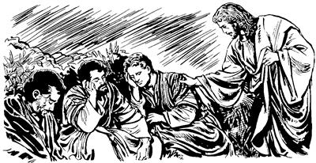
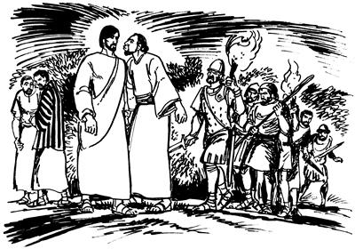
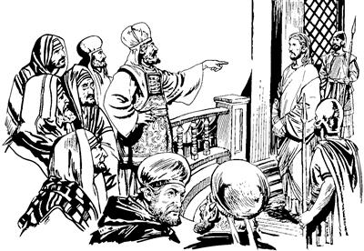
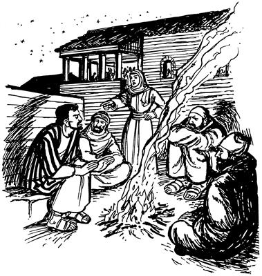

Yesus seklebaogti tebaogha
14:1-15:47
Kel nhondi “Kipnun” aro mag song walinge Yesusti usoghag ikogha
(Matius 26:1-16; Lukas 22:1-6; Yohanes 11:45--12:8)
14
1-2 Yahudi nimi sembe nubu sum peramag wamogpa, nimi maiknori, “Nubu sum ‘Paskah' amni taleba, as Yerusalem sani yoro telameberi, kwaneng walerop komne ik saekpare telamukap,” aro Yerusalem yalamek.a Yalamekti wamekpa, memnang Yahudi nimi sae agha Allah sembe pairopnang sikindoyaboap, Allahri Musa pere agha “Undo-undo unulamlulom” aro mome toropne ambatsiropnangap tanekori, “Welaro Yesus haing kumbaberi, sae kaupto saelbaberi, ya'ag obukap,” senelamek. “Obukap,” senelamek aghana seneraglamekti, “Nubu sum Paskah taleba, ik saekpare sani yoro terop sum abeneko pere el sae kaupto saelbabe tanena, nimi maikno tane wamang nimiri nu walamsiikti, yanghang alamikag,” aro log senelamek.3 Wene “Salero obukap,” senelamekpa, Yesus Yerusalem peramag as Betania Simondi aeag wamog. Simon poneko samenag kon tena pololamogpa, wali taogne ponekori aeag Yesus wamogti, kwaneng telamog. Kwaneng telamogpa, kelabo nhondi aeag wa'iogti, nongag pelagtop mag song walinge payaog. Nongag pelagtop mag song walinge nene kirik agha sunurop ma'i nhonag ikto tobongkibekpa, kamna alikinag kapto tobogti payaog. Payaogti, “Ologha babe pimna koma ni ikto kipnun,” aro ma'i ina siram kobongkia Yesusti usoghag ikog.

4 Kamna alikinag kapto torop mag song walinge ikogpa, nimi etpare wamekne tanekori ibekti, wana yo senelamek. Yo senelamekti, sin mamun yubu lelamekti, “Sa'a sembe mag song walinge nene loba nenero iklopla?5 Song wali mag enena, nimiri hengkun nhon awe welamnaba, kamna tatsiropneag saog uro kamna kapto torop mag ane. Keleneri saeag agha nimiri kamna kapto topsoba, kal ma'al ane nimi sae agha orog nimiag pogto tatsiso aghana iklopla,” aro keleneko wabaek.
6 Wene aro walamekpa, Yesustina, “Lipsisut! Sa'a sembe keleneag walamlom? Eldi nanag ‘Nimi o'omne,’ sembaneldi walia ual. 7 Sin nimi sae agha orogne sopsop a'un nusamag wamikpa, a'undi ‘Wene yepsisebe,’ sembamun tanena, sopsop yepsinep. Ot nana agha sopsop a'unap nhon wamukap kom. 8 Keleneri eldi saeag wamlangeag agha na sembe ‘Nimi o'omne,’ aro kipnel. Na amik tebahaneba, nari nongag nimiri song wali mag pelaganehengdi, so'oag sikitneheng saog uro ual. Na anam teban komag keleneri nanag song wali mag pelaghaneldi, na tebane sum sembe wero o'ona sembamnel. 9 Sikne agha ambarelamsin! Mog so'o tala-tala yubu walinge Allahri nimi saelbamsilne sembe nimiri ambarel palamsiikti, keleneri nanag walia ualne sembe ekon tan koma ambarelamsukang,” seog.
10-11 Wene “Kelenekori wali kipnel,” seogpa, Yesus eldi yubu ka'ero neleptopnang aobarenang agha nimi nhonna, Yudas Iskariotne nenekori, “Yesus pankhebanun,” aro piog. Yudas nenekori memnang Allah sembe pairopnangag piogti, “Yesus pankhebanun,” aro ambatsiogpa, wana awi sembamek. Awi senelamekti, “Yesus nunag pankhebamenba, kal ma'al kamna tatkukap,” aro salag lero pibek. Saekag lebekneag agha Yudasti “Etsum pa'asea wamlul,” aro weamogti, keme nelero seneraglamog.
Yesus eldi yubu ka'ero neleptopnangapti kwaneng rotiap anggur lolterop maghap teeka
(Matius 26:17-30; Lukas 22:7-23; Yohanes 13:21-30; 1 Korintus 11:22-25)
12 Yahudi nimiri ik saekpare kwaneng roti walerop komne telamek ko'o alnirop sum, nubu sum Paskah sumeneko taog. Paskah sumeneko Yahudi nimiri sop-sop ul palamekne sunsunum uro “Pham domba me oro yobaukap,” aro ulamek. Yobaukap aro ulamekti, Yesusti yubu ka'ero neleptopnangdi Yesusag hailamekti, “Nai, nu sam piberi, kwaneng yobabeba, yamenba nhon tukap. Tala siba pham domba me oro yoro tukap?” aro haibaek.
13 Wene aro haibaekpa, Yesusti eldi yubu ka'ero neleptopnang phende arukto poglamsiogti, “As soro kalurop as Yerusalem palamtumunba, nimi kabuni nhon mag tero poa yalamlenge pone haiptamundi, elag nelebarurom. 14 Elag nelepto palaptumundi, el wa'alogle ae eneag wa'arurom. Wa'arumundi ae ngainge ponekoag, ‘Yubu amohiropne ponekori nun anag pogsilba, yanam. Anag hailangkeldi, “Nanap nari yubu ka'ero neleptopnangap Paskah sumeneko mo wameberi, andi ae lom nhonag telaukap. Ae lom nelag agha nanap nari yubu ka'ero neleptopnangap mo wameberi, pham domba me nhon tukap?” aro hailangkeldi, nu pogsilba, yanam,’ sururom. 15 Wene surumunba, ae ngainge ponekori a'unag ae tika paliagneag ae lom nubunge ambatsilul. Ae lom nubunge anekoag ae usa puna babe, kwaneng palinag babe ni sunuro nu sembe wero wamla. Ae lom eneag agha nu ni sembe wero palilamturom,” aro Yesusti sin phende pogsiog.
16 Wene aro pogsiogpa, eldi yubu ka'ero neleptopnang phende abeneko as Yerusalem anekoag pirekpa, Yesusti sinag, “As anekoag ipturom,” seogne sunsunum uro iptek. Iptekti, ae lom anekoag wa'irekti, Paskah sum sembe tenaba yoro wero palilamdek.
17 Ae imbaogpa, Yesusap eldi yubu ka'ero neleptopnang aobareap wa'iek. 18 Wa'iekti kwaneng tero pukamekpa, Yesusti lelamogti, “Sik uro ambarelamsin. Wene nu ane kwaneng nhon tero pukamapnang anabiag agha nimi nhondi na pankhebanuanel,” aro eldi yubu ka'ero neleptopnangag ambatsiog.

19 Wene aro ambatsiogpa, ka'ebaekti wana mali tahiogpa, eldi yubu ka'ero neleptopnang ni tanekori a'ero-a'ero Yesusag lelamekti, “Nari komdiog,” alamek.
20 Wene alamekpa, Yesusti nen yubu lelamogti, “A'un aobarenang anabiag agha nhondi pankhelebanuanel. Nimi endana nanap nikag telamnamdi, kal wana lolterop maghap pelengenag, el babe nikag kwaneng roti pelengkia telamnam aghana, pankhebanelul. 21 Na mog so'oag nimi tahinge nanag uro yabilulnena, samenag Allah yubuag na sembe mome toro pibekne sunsunum uro tebanun. Ot el pankhebanele nimi sembe yaghe senero seklebalul. Na nimi mog so'oag nimi tahinge pankhebanele nimi nenekoag Allahri tam ikin sirikne piplul. Ilindi el mangkaho komba, elag ikinne wamso komba, seklebaho kom. Aghana, na pankhebanelul nimi sembe ikin sirikne elag pipleba, seklebalul,” seog.
22 Wene seogti, kwaneng telamekag agha Yesusti kwaneng roti tobogti, “Nani, wali tatsilam,” aro Allah kibog. “Wali tatsilam,” aro yubu lebogti, kwaneng roti aneko saeri khepto-khepto eldi yubu ka'ero neleptopnangag tarelamsiogti, “Na nong ane topsuri tehut,” seog.
23 Wene seogti, mag anggur lolterop mag ma'i tobogti, “Nani, wali tatsilam,” aro Allah kibogti, sin tebatsiogpa, sin ni wamekne tanekori anggur lolterop mag ane teek. 24 Anggur lolterop mag ane telamekpa, Yesusti ambarelamsiogti, “Nari eneng nimi maikno taulbahinepne sembe lambanualne enena, Allahap yubu nikne kaupnep eneng wamla. 25 Sik uro ambarelamsinne ka'ebalulom. Allahri nimi mog so'oag nimi saelba uhin ko'o anam uro yabin komag, anggur lolterop mag nen tenun kom. Ot Allahri nimi mog so'oag nimi saelba uhin ko'o lag tale sumeneko og, weneogna anggur lolterop mag wendogne tenun,” seog.
26 Wene seogpa, Allah omektop sepna nhon sebekti, Zaitun yimag piek.
Yesusti Petrusag, “Andi na sembe ‘Ekonne' sululam,” aro ambarogha
(Matius 26:31-35; Lukas 22:31-34; Yohanes 13:36-38)
27 Zaitun yimag piekti, Yesusti eldi yubu ka'ero neleptopnang ambarelamsiogti, “Samen Allah yubu silimu tiptopne nhondi mome toro pibogne ane:
‘Nari pham domba yae ua uropne poneko omneba,
pham domba taneko talupto tala-tala pukang,’
aro mome toro pibog. Mome toro pibogne nene a'un sembe mome toro pibogpa, a'un ni tanekori na liloa taluptangka pululom. 28 Aghana omneikpa, nen samoro kamag taneri, na sam mog so'o Galilea pineba, a'un amik yalulom,” seog.
29 Wene “Na liloa taluptangka pululom,” aro Yesusti ambatsiogpa Petrusti, “Sin ni tanekori an liloa pikiikba, nanogna an liloa pikenun kom,” seog.
30 Petrusti wene seogpa Yesusti, “Yubu sikne ambarelamsinenge ka'ebamendi el uro wamlulam! Ae anam kwelekan komag winang ayam anam ik phende yubu lemna komag, andi ik wilindi na sembe, ‘Nimi ene na ekonne,’ sululam,” seog.
31 Wene seogpa, Petrusti nen mikip uro ambarelamogti, “Kom. Nana tapto anap ma'aro tebahenemea babe, nari an sembe, ‘Ekonne,’ senun kom,” seog. Seogpa Yesusti yubu ka'ero neleptopnang nenneri babe nika uro lebek.
Yesus Getsemani so'oag piogti, Allahag molona molbaogha
(Matius 26:36-46; Lukas 22:39-46)
32 Wene seekpa, Yesusap eldi yubu ka'ero neleptopnangap mog so'o sina Getsemani piek. Piekti Yesusti ambarelamsiogti, “Na Allahag molona molol pinundi, a'un ane pukamlulom,” seog.
33 Wene seog aghana, Yesusti Petrusap Yakobusap Yohanesap enero pabihiogti, olog ko'oro palamekag abenekoa Yesus wana samsamoro wana ikin taog. 34 Wana ikin uro ambarelamsiogti, “Na wana ikin sirik uanelba, tebanep saog uro wamna. Ane wapmundi, haing whi uro yae wamlulom,” seog. 35-36 Wene seogti, Yesus olog nen ko'oro piogti, wana ikindi so'oag malingkina Allahag molona mololamogti, “Naba naniong! Ot Andiog nia mangkina uanep. Nanag ‘Seklero tebalulam,’ aro pogneomne ikindi, kom nembahom. Ot nari ‘Undo yaboho,’ seneropne agha ualulam kom. Andi wanaag seneropne agha uro yabile,” seog.
37 Wene seogti eldi yubu ka'ero neleptopnang wilindi wamekag samoro yaogti, malameka ipsiog. Ipsiogti, Simon Petrusag, “Simon, meo! An malamlam, te? Ko'o nhonog wero yae wamnep kom, te? 38 Nimiri wanaag agha, ‘Walia uahene,’ sembanep aghana, nong mikip komdi walia uan koma uro yabileagti. Ane sembe haing whi uro yae wamsuri, Allahag mololamsut. ‘Sa'a-sa'a uro yabileba, khapto wamukap,’ aro mololamlulom,” aro ambatsiog.
39 Wene aro ambatsiogti, nen samoro piogti, Allahag molona samen lel piogne saog uro nen lel piog. 40 Lel piogti, nen samoro yaogti kemelamsiogpa, sin nen malamek. Sin kwahingdi malamekne sembe aliri, “Sa'a sukap,” aro yubu koma wamek.
41-42 Yubu kom taekpa, Yesus nen samoro ik wilindip sum Allahag molona molol piog. Piogti, Allahag molona molbaogti, nen samoro yaog. Yaogti malameka kemelamsiogti, “A'un anam tektek papto malamlom, te? Abenda maplom! Puksuri, kembamsut! Na mog so'oag nimi tahinge pankhebanuanelba, mali-malia uropnangdi na sae kaupto saelbanukang. Wene palumukap! Na pankhebanelne neneko yalamla,” seog.

Yesus haing sae kaupto saelbaekti pabieka
(Matius 26:47-56; Lukas 22:47-53; Yohanes 18:3-12)
43 Yesusti anam yubu ambarelamsioghag agha kemelamekpa, eldi yubu ka'ero neleptopnang aobarenang abeneko agha Yudas neneko yalamogha ibek. Yudasap nhon yalamek nimina, nimi maikno “Yesus saelbaukap,” aro yaek. Sin Yudasap nhon yaeknang anekona, memnang Allah sembe pairopnang sikindoyaboap, Musari yubu ambatsiropnangap, Yahudi nimi sembe wenehiropnangap tanekori pogsiekpa, karogap kameap saelba, “Yesus haing sae kaupto saelbaukap,” aro Yudasag nelebel alamek. 44 Sin anam Yesusap haiptan komag Yudasti sinag kekneba nhon el nenelamsiogti, “Nari somoro togtogha kiplamne nimi endane, el agha saelbamundi, lambaleag aro wali yae uro pabululom,” aro ambatsiog.
45 Wene aro ambatsiogpa, Yudasag nelepto yaekti, Yudas yingkin togha abeneko pere Yesusag pintogha, “Nai, wali yubu ambatsiropne wamlam!” aro togtogha kibog.

46 Togtogha kiplamog abeneko nimi yaek nimi tanekori Yesus saelbom agha haing sae kaubek.47 Haing sae kauplamek nimi anabiag agha memne Allah sembe pairop nang sikini nubunge arukna nhon babe wamog. Haing sae kauplamekpa, nimi nhon Yesus peramag sekamogne ponekori karog kilbom agha memne Allah sembe pairop nang sikini arukna wamogne poneko ao pubom agha pelengelobog.48-49 Pelengelobogpa, salelamek abeneko pere Yesusti nimi tanekoag lelamogti, “Sopsop Allahri Mem Ae aramag wa'alamnori, a'un whingag Allah yubu ambarelamsinobog, a'undina salelamneom kom. Na ‘Mo sekukap,’ aro mal tarop nimi sikini wamsene tanena, a'undi nanag yalamlomne, ‘Nimi yonge ane oro saelbaukap,’ aro karogap kameap payalamlomne sunsunum sembanep. Aghana, na mo sekukap aro mal taropne kom. Ane sembe a'undi nimi whingag yo kom uro na saelbanep aghana, samenag Allah yubu silimu tiptop nimiri mome toro pibogne sunsunum uro uro yabilul ane sembe, wene yalomdi undo salelamnelom,” seog.
50 Wene alamog abeneko, eldi yubu ka'ero neleptopnang ni el laploa tognoptang-tang merebaek. 51-52 Sin Yesusag neleptop nimi tognoptang-tang merebaek nimi agha kabuni nhon ag sabonge agha nongag wangkamogti, Yesusag neleplamog. Sin Yesus haing sae kauplamek nimi tanekori, “Yesusag neleptopne eneko saelbaukap,” aro ulamekti saelbaekpa, ag aneko kologlobi agha kabeog merebaog.
Yesus sae saelbaekti, nubunang Yahudi nimi sembe tam kareptopnang whingag pabieka
(Matius 26:57-68; Lukas 22:54-55, 63-71; Yohanes 18:13-14,19-24)
53 Yesus saelbaekti, memne Allah sembe pairop nang sikiniri aeag poa palamekpa, memnang Allah sembe pairopnang sikindo yabo niap, Yahudi nimi sikini yaboap, Musari yubu mome ambatsirop nangap ni poloro winiptaekpa, sindi whingag Yesus poa piek. 54 Yesus salero pabalamekpa, Petrusna weag agha poro tiro palamogti, memne Allah sembe pairop nang sikiniri aramag wa'al piog. Wa'al piogti, memne Allah sembe pairop nang sikini yae ua urop nang anabiag auk lekto pukamog. 55-56 Auk lekto pukamogpa, memnang Allah sembe pairop nang sikini yaboap, ora nimi nubungeri Yahudi nimi sembe tam lelekto kemeropnangapti, “Yesus ya'ag obukap,” aro Yesusag tam palinne sembe kemelamek. Elag tam palinne kemelamekti, orolena lerop nimi yopsiekpa, nimi tanekori Yesus sembe, “Undo-undo malia uaori leboba, ibobori ka'ebabo,” aro lolorop yubu orolena ambatsiek. Lolorop yubu orolena yubu lelamek aghana, lelamekne nene olog tiptangtop komdi, nimiri sik sembanep kom ane sembe, ka'elamekneag agha Yesusag tam palinne olog ibek kom.
57-58 Yesusag tam palinne kemelamekti ibek komba, nen nimi etbare sekekti, yubu minirop yubu mangkaek. Yubu minirop yubu mangalamekti, “Nimi eneri yubu lelamoba ka'ebabongena, ‘Allahri Mem Ae, nimi saeri sorop ae enena kwerekaneri, ik wilindiag agha mem ae wendogne nimi saeri sorop komne sobanun,’ alamoa ka'ebabo,” seek.
59 Wene aro mangarop yubu lebekne nene babe olog tiptangtop komdi, nimiri sik sembanep kom.
60 Wene aro sik sembanep komne lebekpa, memne Allah sembe pairop nang sikini poneko sin ni wameka anabiag sekogti, Yesusag hailamogti, “Sindi wene an sembe ‘Malia lelamo,’ seangne sembe andi pelebeltanan yubu leplulam kom te?” aro haibaog.
61 Wene aro haibaog aghana, Yesus yubu lemna koma wamog. Yubu lemna koma wamogpa, memne Allah sembe pairopnang sikini ponekori nen hailamogti, “An Allah Paliagne Elme walinge wamlam to, kom to? Nuni Allahri an sembe ‘Mog so'oag nimi taluro saelbamsilul,’ aro wepto pogkeogne poneko Kristus wamlam to, kom to?” aro haibaog.

62 Wene aro haibaogpa Yesusti, “Wene leplamne pone wamna. Na imag agha mog so'oag nimi tahinge Allah mikipne poneko sae sirik sip pukamneri, toa nusam toman nen samoro mog so'o aneag yanea imnululom,” seog.
63-64 Yesusti wene seogpa, memne Allah sembe pairop nang sikini ponekori ka'ebaogti, yo lelem elenge ag wangkamogne taepto ebog. Elenge ag wangkamogne taepto ebogti, tam kareptopnangag lelamogti, “Eldamneri leplange wene ka'ebap. Yog nimiri ‘Undo-undo lelamoa ka'ebano,’ aro lenne nen ka'ebaukap kom. Allah san tilipto, ‘Paliagne wamna,’ aro leplange ka'ebalom. Wenena yubu ka'ebalomneag agha ‘Huaukap,’ aro seneraglamlom?” aro haibahiog.
Wene aro haibahiogpa, nimi wamek nimi tanekori, “Allah san tiliptop yubu lepla ane sembe, ya'ag tebalulne sunsunum,” aro tam karebaek.
65 “Tebalul,” aro tam karebaekti, nimi etpareri sulu mag supto haing ubi agha olamekti, “Allahri an wana heklangkelne agha lebe. Etneri an olangkelne si lepmen,” aro yubu nepto olamek. Olamekpa, memne Allah sembe pairop nang sikini nubunge yae ua urop nang tanekori babe Yesus salero olamek.
Petrusti Yesus sembe, “Na ekonne,” seogha
(Matius 26:69-75; Lukas 22:56-62; Yohanes 18:15-18,25-27)
66 Yesus olamekpa, memne Allah sembe pairop nang sikini ponekori ae aramag Petrus tau sip wamogpa, memne Allah sembe pairop nang sikini arukna kelabo nhon Petrus wamoghag yaog. 67 Yaogti Petrus auk leklamogha ibogti, wali uro whingag kembirogti, “An babe Yesus Nasaretne nenekoag neleplamomba ipkeno,” seog.
68 Wene seog aghana Petrusti, “Na ekon. Andi sa'a yubu agha lelamlam? Na seneragna kom,” seog. Wene seogti, sekom agha memne Allah sembe pairop nang sikini ponekori ae aram ina siramag piogpa, winang ayam yubu lebog.
69 Wene seogti, ae aram ina siramag aneko piogti sekamogpa, keleneko nen yaogti Petrus ibog. Ibogti nen sarikto nimi wamek nimi tanekoag alniro ambarelamsiogti, “Nimi ene babe Yesusag neleplamla,” aro ambatsiog.
70 Wene aro ambatsiogpa, ka'ebaogti Petrusti nen yubu lelamogti, “Yesusna na ekonne” seog.
Wene seogpa, ko'o olog wameka nimi taneko nen yingkina Petrusag lelamekti, “An sembena, ‘Galileange,’ aro el wamap. Undop agha nuri an sembe, ‘Sik tapto Yesus nenekoag neleptopne wamla,’ aro seneraglamap,” seek.
71 Wene seekpa, Petrusti samoro yubu ambarelamsiogti, “A'undi si lelamlom nimi ene na otsik tapto ekonne agha lelamlom. Orolena ambarelamsin tanena, imagne ponekori hae omnelul,” seog.

72 Wene alamog abeneko pere winang ayam yubu ik phendepne yubu lebog. Winang ayam ik phendepne yubu lebogpa, Yesusti samenag yubu lebogne sembe Petrus el taog. Yesusti samen Petrusag ambarelamogti, “Winang ayam yubu ik phende lemna komag andi ik wilindi na sembe ‘Ekonne' aro yubu leplulam,” seogne sembe Petrusti seneraghogti, “Sik uro lepla,” aro engelamog.